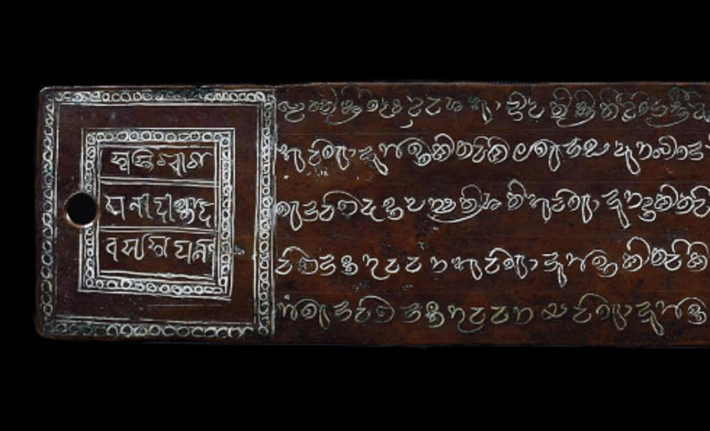

Inicio > Blog Bitácora de un bibliotecario > La forma de la memoria (02)
La forma de la memoria (02)
Los libros de cobre de las islas
Los lōmāfānu y la autoridad real en las Maldivas
Este post forma parte de una serie que explora las múltiples formas en que las sociedades humanas han almacenado, transmitido y transformado la memoria a lo largo del tiempo, más allá de las historias restringidas centradas en los libros y la escritura. La serie aborda los archivos, los documentos y los sistemas de memoria como tecnologías históricamente situadas, moldeadas por relaciones de poder, condiciones materiales, ecologías y cosmovisiones culturales, y examina formas de transmisión frecuentemente excluidas de las narrativas dominantes sobre alfabetización y preservación: tradiciones orales, patrones tejidos, estructuras musicales, performances rituales, paisajes, cuerpos y otras infraestructuras vivas de la memoria.. Todas las entradas de esta serie pueden consultarse en el índice de esta sección.
Más allá del códice
Las historias del libro suelen organizarse en torno a una secuencia familiar de materiales y formatos: tablilla, rollo, manuscrito, códice, volumen impreso, archivo digital. Esta secuencia es útil, pero puede limitar mucho la perspectiva. Fomenta la suposición de que los documentos son soórtes de lectura y que su historia es sobre todo la historia de superficies cada vez más eficientes para almacenar texto.
El lōmāfānu maldivo no se ajusta fácilmente a tales expectativas.
Un lōmāfānu es un documento registrado sobre planchas de cobre: una serie de largas bandas metálicas grabadas con escritura y unidas por un anillo. No es un códice, ni un rollo, ni una inscripción monumental fijada a un edificio o superficie de piedra. Es portátil, pero no informal; secuencial, pero no está encuadernado como un libro; textual, pero también legal, religioso, político y material en su autoridad.
Los lōmāfānu más antiguos que se conservan datan de finales del siglo XII y fueron emitidos en Malé, la capital real. Se conocen ejemplos de Gan, Isdū y Dambidū, en el atolón de Haddummati, una región que albergó importantes monasterios budistas antes de la conversión de las Maldivas al islam. Estos edictos reales no solo registraban decisiones, sino que también otorgaban a las órdenes políticas y religiosas una forma documental perdurable.
Estos objetos no solo conservan la escritura maldiva primitiva. Su importancia radica en el tipo de función documental que desempeñaron. Registraron la reorganización de la tierra, la religión, la autoridad y la memoria institucional tras la conversión al islam. No son libros de devoción, literatura ni erudición, sino instrumentos mediante los cuales se grabó un nuevo orden en la materia.
Concesiones en un reino insular
Los lōmāfānu eran concesiones registradas en placas de cobre, a través de las cuales se inscribían decisiones reales, donaciones, privilegios y dotaciones, todo ello en superficies metálicas duraderas. En las Maldivas, esta forma documental adquirió una fuerza particular al utilizarse en un momento de ruptura religiosa y política.
El lōmāfānu de Isdū es uno de los ejemplos más claros. Se trata de una serie mediante la cual se revocaron donaciones anteriores a monasterios budistas y se emitieron nuevas donaciones para la construcción y el mantenimiento de mezquitas. Este acontecimiento se sitúa a finales del siglo XII, durante la radical transformación de la sociedad maldiva tras su conversión al islam.
El lōmāfānu no debe considerarse un simple registro de donaciones piadosas. Conserva actos de sustitución. Aparece en un momento documental en el que la propiedad institucional budista, el espacio ritual y la autoridad religiosa se reasignaban a estructuras centradas en las mezquitas. La placa de cobre no solo conserva información sobre esta transformación, sino que participa en su consolidación.
Una donación grabada en cobre hace algo más que indicar que se han entregado tierras o recursos: estabiliza el acto. Convierte el mandato real en un objeto físico susceptible de ser almacenado, custodiado, exhibido, consultado y transmitido. Otorga a la autoridad un cuerpo material.
La primera capa documental islámica
Los lōmāfānu no son los artefactos escritos más antiguos de las Maldivas. La inscripción de Landhoo, un artefacto en piedra coralina inscrito en una escritura brāhmī similar a las variedades del sur de la India de los siglos VI al VIII, es el item escrito autóctono más antiguo descubierto hasta ahora en las islas. Su texto ha sido identificado como un conjuro dhāraṇī, probablemente relacionado con un monasterio budista: una reliquia venerada en una estupa.
Las planchas de cobre pertenecen, en cambio, a la primera capa documental islámica que se conserva. Aparecen después de este trasfondo escrito budista e indio más antiguo, aunque aún conservan partes del mismo en su forma gráfica y lingüística. Sus textos principales fueron escritos en dhivehi primitivo, utilizando la escritura comúnmente denominada evēla akuru, un término que puede traducirse como "escritura de aquella época" o "escritura antigua". Esta forma curva del antiguo alfabeto maldivo muestra afinidades con las tradiciones de escritura del sur de la India, mientras que las formas nāgarī o protobengalí presentes en algunos documentos apuntan a vínculos budistas aun más antiguos con centros de aprendizaje del oriente de la India.
El lōmāfānu de Isdū hace especialmente evidente esta mezcla. Emitido por el rey Gaganāditya para Isdhoo en Haddummati, o atolón de Laamu, alrededor del año 1194 d. C., su texto principal está escrito en dhivehi primitivo y evēla akuru, mientras que el sello real utiliza una escritura tipo nāgarī y sánscrito. Por lo tanto, el documento tiene una función institucional islámica, pero no está desvinculado gráfica ni lingüísticamente del mundo indio anterior.
La conversión al islam aparece aquí como una reorientación de los recursos gráficos heredados hacia un nuevo orden religioso y político.
El lenguaje como sedimento
Los lōmāfānu también conservan una estructura lingüística estratificada. Sus textos combinan elementos dhivehi, sánscrito, árabe, persa y de lenguas índicas antiguas. El resultado no es una simple sustitución de un vocabulario religioso por otro, sino una superficie escrita donde varias historias lingüísticas permanecen activas al mismo tiempo.
En el lōmāfānu de Isdū, los elementos sánscritos aparecen no solo en sellos y firmas reales, sino también en nombres, invocaciones, títulos y números, escritos con la escritura local. Algunas terminaciones sánscritas se añaden a formas de palabras dhivehi, lo que demuestra que la antigua lengua de prestigio no había desaparecido de la práctica documental.
El mismo documento también registra la llegada del vocabulario institucional islámico. La placa 13r incluye formas como masudid(h)u, del árabe masjid, "mezquita"; mālimu, del árabe mu'allim, "maestro"; y mūdimu, del árabe mu'aḏḏin, "muecín". Estos términos se adaptaron a la fonología y gramática del dhivehi y se escribieron en la escritura local.
El lōmāfānu de Gamu incorpora vocabulario religioso de origen persa, como petāmbaru, del persa pay(ġ)āmbar, "profeta"; roda, del persa rōza, "ayuno"; namādu, del persa namāz, "oración"; y miskitu, que refleja el persa mazgit, "mezquita". También contiene términos geográficos y escatológicos islámicos, incluyendo nombres de paraísos e infiernos.
Las planchas de cobre registran la conversión a través del propio lenguaje. Fórmulas sánscritas, estructuras administrativas del dhivehi, términos institucionales árabes, vocabulario religioso persa y prácticas de escritura local coexisten en el mismo campo documental. La autoridad del nuevo orden religioso se plasmó a través de materiales lingüísticos preexistentes, en lugar de mediante una ruptura radical con ellos.
Documentos de conversión
Los lōmāfānu que se conservan no deben considerarse ejemplos intercambiables de "libros de cobre". Cada uno preserva una situación documental específica dentro de la consolidación del islam tras el período budista.
El lōmāfānu de Isdū trata sobre la mezquita de Isdū y la reasignación de recursos para el sostenimiento de la nueva institución. Su vocabulario es práctico y administrativo: caña para el techo, aceite para las lámparas, arroz para las limosnas, raciones de comida para el maestro del Corán y el muecín, y asignaciones para la mezquita. El documento registra la conversión a nivel de provisión material. Un nuevo orden religioso requería edificios, personal, alimentos, luz, techos, terrenos y apoyo recurrente.
El lōmāfānu de Gamu, también emitido en 1194, trata sobre una mezquita en Gan, otra isla del atolón de Haddummati / Laamu. Su texto transita de la dotación práctica a un marco cosmológico islámico más amplio, que incluye listas de paraísos e infiernos, nombres geográficos islámicos y una densa mezcla de elementos árabes, persas, prácritos, sánscritos y dhivehi. El documento no solo financia una mezquita, sino que sitúa a la nueva institución dentro de un universo religioso importado, traducido a la lengua y escritura locales.
El lōmāfānu de Dambidū parece operar a una escala política aún mayor. En dicho documento, el edicto real se dirige a las islas desde Kelā en el norte hasta Aḍḍu en el sur. La conversión, por lo tanto, no se presenta únicamente como un acto local de fundación de una mezquita, sino que se convierte en un mandato archipelágico, distribuido mediante la autoridad documental real.
Estos registros pertenecen a un momento coercitivo de reorganización religiosa. Las Maldivas se convirtieron oficialmente al islam en el siglo XII, pero las placas de cobre no muestran un simple proceso de persuasión espiritual ni una deriva cultural gradual. Están vinculados a la orden real, el desplazamiento institucional, la reasignación de tierras y la destrucción o sustitución de espacios religiosos budistas. Los antiguos recursos monásticos se redirigieron hacia las mezquitas. Los paisajes rituales primigenios fueron desmantelados o modificados. Los artesanos que habían trabajado dentro de las tradiciones arquitectónicas y decorativas budistas fueron reubicados en casas de oración islámicas.
Los materiales de Isdū y Gamu son especialmente crudos en este sentido. El primero se asocia con la revocación de subvenciones a monasterios budistas y la creación de nuevas subvenciones para mezquitas. El segundo registra la rotura de remates de estupas y la destrucción de estatuas de Vairocana. Otros relatos relacionados con el mismo proceso de conversión describen el trato violento a los monjes de los monasterios de Haddummati.
Por ende, los lōmāfānu no deben suavizarse ni ser convertidos en registros neutrales de "cambio religioso". Son documentos de violencia administrativa. Nombran lo que se apoya, lo que se interrumpe, qué instituciones perduran y cuáles son desplazadas. Su autoridad reside precisamente en esta convergencia de escritura, metal, mandato real, tierra, religión y fuerza.
La concesión grabada en cobre no es solo un documento legal. Es un instrumento de memoria reordenada. Convierte la conversión en un hecho administrativo y le otorga a ese hecho una forma material duradera.
El cobre y el archivo perdido
El poder documental del lōmāfānu se agudiza al contrastarlo con lo que no sobrevivió. Los monjes budistas de las Maldivas debieron producir manuscritos, probablemente en hojas de pandano, pero esa cultura manuscrita orgánica no dejó ningún corpus que haya sobrevivido. Fue quemada, destruida o eliminada por completo, de modo que ahora solo sobrevive indirectamente, a través de restos arqueológicos, relatos posteriores, inscripciones, esculturas y las huellas documentales del orden que la reemplazó.
Esto crea un archivo asimétrico. El cobre sobrevive. Las hojas no. Los edictos reales permanecen. Los manuscritos budistas desaparecen. La voz administrativa de la conversión se conserva, mientras que gran parte del mundo intelectual y ritual al que desplazó debe reconstruirse a partir de fragmentos. El antiguo mundo budista debe abordarse a través de evidencias parciales, posteriores o materialmente desplazadas.
Los lōmāfānu no son supervivientes neutrales. Su perdurabilidad pertenece a un campo de destrucción. Preservaron el nuevo orden religioso y político en una forma material lo suficientemente fuerte como para perdurar a través de los siglos, mientras que el antiguo archivo orgánico desapareció casi por completo. Esto no prueba que el cobre se eligiera por el clima de la isla, pero sí muestra cómo la diferencia material influyó en la supervivencia histórica. El metal transmitió un tipo de memoria; las hojas, no.
Las placas de cobre también documentan la transformación del espacio religioso. Las primeras mezquitas maldivas conservaron elementos de las antiguas tradiciones de construcción de templos: elaborados trabajos en madera, techos pintados, motivos vegetales y disposiciones espaciales sagradas adaptadas al uso islámico. El lōmāfānu de Isdū describe la construcción de una mezquita en los terrenos del antiguo monasterio de Śrī Isdū, incluyendo piedra, madera, pinturas, la dirección de la oración, el púlpito, el techo de paja, los muros, las puertas, las estructuras de techo talladas y lacadas, una casa de limosnas, un almacén y otras propiedades transferidas al complejo de la mezquita.
La continuidad no fue solo estilística. Los artesanos formados en los sistemas arquitectónicos y decorativos budistas anteriores parecen haber sido reorientados hacia la construcción de casas de oración islámicas. Las técnicas antiguas sobrevivieron, pero su alcance visual se vio reducido por las restricciones iconográficas islámicas.
El documento registra, por lo tanto, la conversión como construcción y orden. Menciona tierras, materiales, edificios, personal, alimentos, petróleo, paja, muros y recintos. Muestra cómo los terrenos de los monasterios se transformaron en mezquitas, cómo se reasignaron las propiedades antiguas y cómo los sistemas artesanales tradicionales se reorientaron bajo nuevas condiciones religiosas.
Para la historia del libro, lo crucial no es solo que un soporte sobreviviera y otro desapareciera, sino que el soporte superviviente pertenezca al orden que reorganizó las condiciones de la memoria. El lōmāfānu no es solo un registro de creencias: es uno de conversión espacial. Su superficie de cobre preserva la reconfiguración administrativa del territorio, la arquitectura, el trabajo y la memoria.
Durabilidad no es sinónimo de legibilidad
El cobre confiere al lōmāfānu una fuerza material inusual, pero no lo hace autoexplicativo. Una placa puede sobrevivir mientras desaparecen las condiciones que antes la hacían legible: las escrituras caen en desuso, los idiomas cambian, los títulos reales se vuelven oscuros y las referencias institucionales pierden su contexto inmediato. Para interpretar un lōmāfānu como algo más que un simple grabado en metal, se requieren conocimientos de paleografía, lingüística histórica, epigrafía, historia religiosa y las instituciones políticas de Maldivas.
Esta supervivencia desigual también se manifiesta en el entorno construido. Muchas mezquitas antiguas de Malé fueron demolidas, reemplazadas o modificadas durante el siglo XX. De las 33 mezquitas mencionadas por Bell en 1921, al menos 15 habían desaparecido a principios de la década de 1980. Las planchas de cobre pudieron perdurar más que las mezquitas a las que dotaron, al igual que perduraron más que gran parte del mundo monástico al que ayudaron a reemplazar.
El archivo que quedó, por lo tanto, es incompleto. El metal permanece. Los edificios desaparecen. Los manuscritos se desvanecen. La escritura sobrevive como conocimiento especializado. Un lōmāfānu puede preservar un acto real a través de los siglos, pero no puede preservar la vida institucional, arquitectónica, lingüística y ritual completa en la que ese acto se desarrolló.
Por esa razón, no debe reducirse a un simple "libro de cobre". Se trata de una secuencia intrincada de actos metálicos: mandato real, donación a la mezquita, transición de la escritura, coerción religiosa, mezcla lingüística, reasignación de tierras y memoria institucional. Sus placas, su anillo, su superficie grabada y su escritura antigua participan de su autoridad.
El lōmāfānu es un acto político-religioso plasmado en metal. Preserva la voz del orden que prevaleció, mientras que otro mundo textual, orgánico, monástico, probablemente escrito en hojas, ahora está ausente. Es un documento de resistencia y reemplazo a la vez: un registro duradero producido mientras las instituciones, los materiales y las memorias anteriores se rompían, se reasignaban o se volvían ilegibles por la destrucción.
Bibliografía
- Bell, H. C. P. (1930). Excerpta Maldiviana. No. 9: Lómáfánu. Journal of the Ceylon Branch of the Royal Asiatic Society, 31 (83), pp 539-578.
- Bell, H. C. P. (1940). The Maldive Islands: Monograph on the History, Archaeology and Epigraphy. Colombo: Ceylon Government Press.
- Gippert, Jost (2024). Written Artefacts from the Maldives: 1,500 Years of Mixing Languages and Scripts. In Sövegjártó, Szilvia and Vér, Márton (eds.) Exploring Multilingualism and Multiscriptism in Written Artefacts. Berlin: De Gruyter, pp. 13-40.
- Maniku, Hassan Ahmed, and Wijayawardhana, G. D. (1986). Isdhoo Loamaafaanu. Colombo: Royal Asiatic Society of Sri Lanka.
- Mohamed, Naseema (2005). Note on the Early History of the Maldives. Archipel, 70, pp. 7-14.
- Reynolds, C. H. B. (1984). The Mosques in the Maldive Islands: Further Notes. Archipel, 28, pp. 61-64.
- Romero-Frias, Xavier (1999). The Maldive Islanders: A Study of the Popular Culture of an Ancient Ocean Kingdom. Barcelona: Nova Ethnographia Indica.
- UNESCO Memory of the World Committee for Asia and the Pacific (2014). Loamaafaanu, Maldives: Nomination Form. https://www.mowcapunesco.org/register/loamaafaanu/